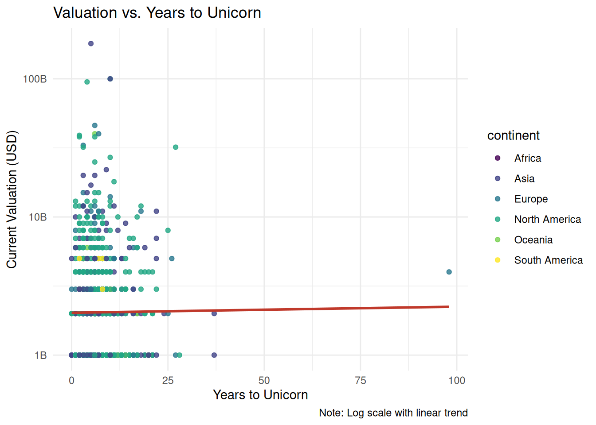
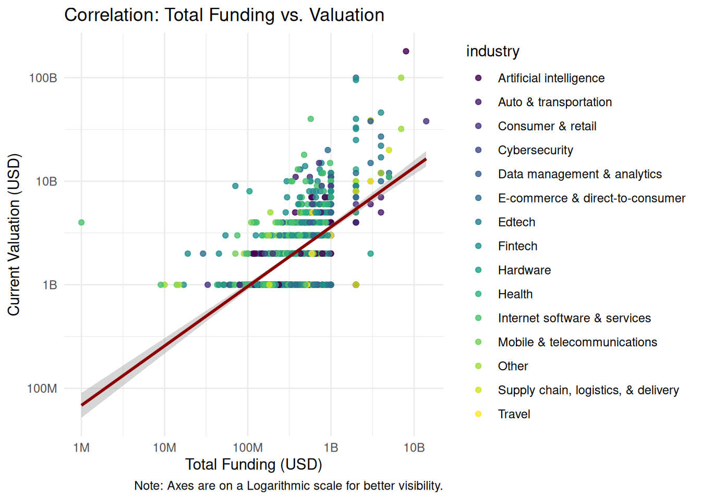
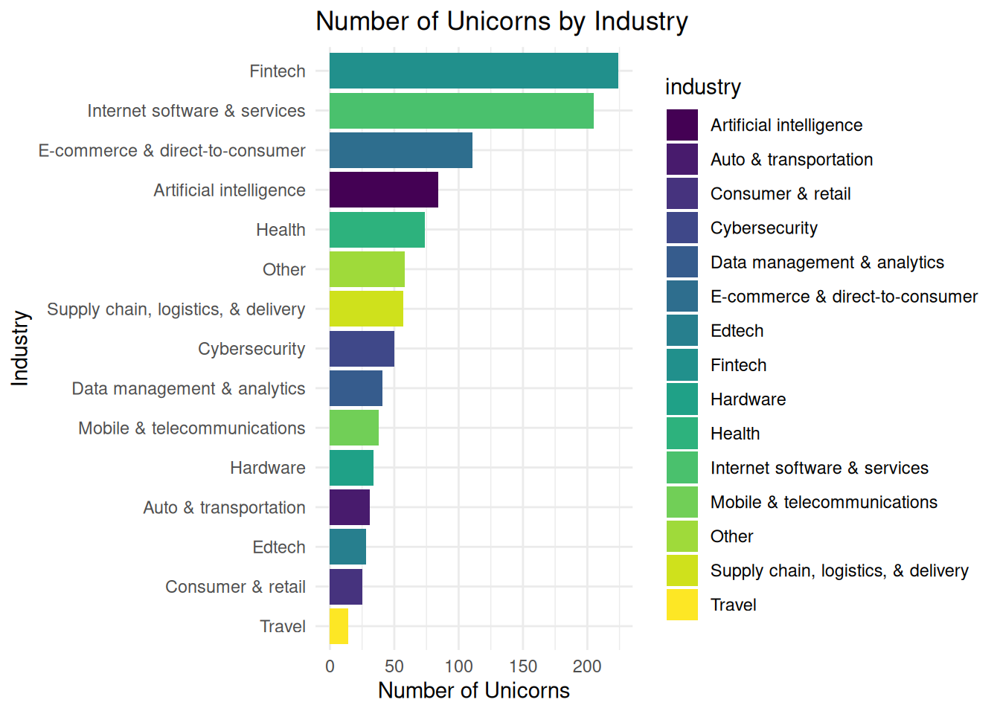

Funding, Valuation, and Growth Dynamics of Billion-Dollar Startups
Author
Himangshu Chetia
Published
January 16, 2026
The Business Problem
A Venture Capital (VC) firm wants to identify “efficient” unicorns (reaching $1B in <5 years) outside Silicon Valley to find underserved, high-growth markets.
Analytical Pipeline (Tech Stack)
Excel: Data entry, validation, and complex string manipulation to convert string values like $8B into integer values.
SQL: Structured querying and aggregation of the 1000+ company dataset.
R: Converting data from wide to long format, statistical analysis and R Markdown reporting.
Tableau: [Link to Dashboard] Interactive visualization of investor networks.
Key Performance Indicators (KPIs)
Speed to Unicorn: Years from foundation to $1B+
Capital Efficiency Ratio: Valuation \(\div\) Total Funding.
Elite Investors: Investors with stakes in the top 10% most efficient startups.
Market Saturation: Density of unicorns per city/industry.
Data Integrity & Cleaning
Currency Normalization: Converted mixed-string funding ($B/$M) into integers for calculation.
Investor Parsing: Created a “long” version of the data (where one company has multiple rows, one for each investor) using R & the tidyverse() package.
Spatial Correction: Imputed missing city data for Singapore, Hong Kong and Bahamas entities.
Outlier Handling: Addressed data entry errors (e.g., founded dates listed after join dates).
Limitations & Assumptions
Survival Bias: Data excludes companies that have already exited via IPO or Acquisition.
Founding Date Assumption: Companies are assumed to be founded on Jan 1st of their founding year for time-series calculations.
Data Source
Dataset: Unicorn Companies Global Valuations
Platform: Kaggle
Author: Adil Shamim
Description: This dataset provides a comprehensive list of “Unicorn” companies (private companies valued at over $1 billion). It includes key metrics such as current valuation, total funding raised, industry sector, headquarters location (City, Country, Continent), the year the company was founded, and the names of primary investors.
Citation: Shamim, A. (2024). Startup growth and investment data [Data set]. Kaggle. https://www.kaggle.com/datasets/adilshamim8/startup-growth-and-investment-data
Phase 1: Data Engineering & Pre-processing (Excel/R)
Goal: Perform heavy-duty aggregation and multi-dimensional filtering.
Currency Normalization
Used the following Excel formula to convert shorthand ($8B, $200M) into long-form integers:
Identified and fixed outliers in the date columns where Year Founded > Date Joined using the DATEDIF function.
Imputed missing values (like the Singapore,Hong Kong and Bahamas city gap).
Data Transformation
Wide to Long Format
Created a dataset (dataset_long.csv)containing only company and investor columns by converting the wide data into long format using the following R script:
# Load the necessary librarieslibrary(tidyverse)# Read the datadf <-read_csv("dataset_long_temp.csv")# Convert from wide to longdf_long <- df %>%separate_rows(investors, sep =",") %>%mutate(investors =str_trim(investors))# View resultview(df_long)# Save the filereadr::write_csv(df_long, "dataset_long.csv")
Geocoding
Created a dataset (geocoded_unicorns.csv) cntaining the Latitude and Longitude of the cities.
Phase 2: Database Management & SQL Analysis
Goal: Establish the baseline metrics.
The “Efficiency” Query:
Performed the following SQL query to filter the companies that reached Unicorn status within 5 years:
SELECT company, years_to_unicornFROM (SELECT company,YEAR(date_joined) -YEAR(year_founded) AS years_to_unicornFROM datasetGROUPBY company, years_to_unicorn ) AS yuWHERE years_to_unicorn <=5ORDERBY years_to_unicorn;
Geographic Grouping:
Performed the following query to find the Average Valuation per startup per country:
SELECT country,avg(valuation) AS average_valuationFROM datasetGROUPBY countryORDERBY average_valuation DESC;
Investor Counting:
Wrote the following query to identify which specific investors appear most frequently in the “Top 10%” of the most efficient startups:
WITH enriched AS (SELECT company, investors,YEAR(date_joined) -YEAR(year_founded) AS years_to_unicornFROM dataset_longWHEREYEAR(date_joined) -YEAR(year_founded) <=5),ranked AS (SELECT company, investors, years_to_unicorn,NTILE(10) OVER (ORDERBY years_to_unicorn) AS decileFROM enriched)SELECT investors,COUNT(*) AS companies_investedFROM rankedWHERE decile =1GROUPBY investorsORDERBY companies_invested DESC;
Top valued industries:
Identified industries with the highest company valuations.
SELECT industry,SUM(valuation) AS total_valuationFROM datasetGROUPBY industry;
Phase 3: Statistical Discovery & Advanced EDA (R)
Goal: Use R to uncover statistical relationships, validate assumptions, and extract non-obvious structure from the global unicorn dataset through rigorous exploratory and inferential analysis.
Preaparation
Load the necessary libraries, a function to format large numbers, set the working directory, load the datasets and calculate time to unicorn status.
library(tidyverse)library(scales)library(knitr)library(viridis)library(maps)library(patchwork)dollar_format_big <-function(x) {case_when( x >=1e9~paste0(x /1e9, "B"), x >=1e6~paste0(x /1e6, "M"), x >=1e3~paste0(x /1e3, "K"),TRUE~as.character(x) )}setwd(r"(/home/himangshu/Desktop/My_Projects/The_Global_Unicorn_Landscape)")data <-read_csv("dataset.csv") %>%mutate(years_to_unicorn =year(date_joined) -year(year_founded))data_geocoded <-read_csv("geocoded_unicorns.csv")glimpse(data)
Distribution of Years Taken to Reach Unicorn Status
ggplot(data, aes(x = years_to_unicorn, y =after_stat(density))) +geom_histogram(fill ="grey70", colour ="white", bins =50, alpha =0.8) +geom_density(colour ="#404080") +geom_vline(xintercept =mean(data$years_to_unicorn), colour ="#D55E00", linetype ="dashed") +geom_vline(xintercept =median(data$years_to_unicorn), colour ="#0072B2", linetype ="dashed") +annotate("text", x =12, y =0.1, label ="Mean", colour ="red") +annotate("text", x =2, y =0.1, label ="Median", colour ="blue") +labs(title ="Distribution of Years to Reach Unicorn Status",subtitle =sprintf("Mean: %.2f, Median: %.2f", mean(data$years_to_unicorn), median(data$years_to_unicorn)),x ="Years to $1B valuation",y ="Density" ) +theme_minimal() +xlim(0, 50)
Unicorns Founded Per Year & Joined Per Year
yearly_counts <-bind_rows( data %>%mutate(year =year(year_founded)) %>%group_by(year) %>%summarise(count =n(), type ="Founded", .groups ="drop"), data %>%mutate(year =year(date_joined)) %>%group_by(year) %>%summarise(count =n(), type ="Joined", .groups ="drop"))ggplot(yearly_counts, aes(x = year, y = count, color = type)) +geom_line(linewidth =1.1) +labs(title ="Unicorns Founded vs Joined Per Year",x ="Year",y ="Number of Unicorns",color =NULL ) +theme_minimal(base_size =13) +theme(legend.position ="top" )
ggplot(data, aes(x = funding, y = valuation, color = industry)) +geom_point(alpha =0.8) +geom_smooth(method ="lm", se =FALSE, colour ="#C0392B") +scale_x_log10(labels =label_number(scale_cut =cut_short_scale())) +scale_y_log10(labels =label_number(scale_cut =cut_short_scale())) +scale_color_viridis_d() +labs(title ="Total Funding vs. Valuation",x ="Total Funding (USD)", y ="Current Valuation (USD)", caption ="Note: Log scale axes") +theme_minimal()
Year Founded vs. Year Joined Unicorn Status
data %>%mutate(year_founded_num =year(year_founded),year_joined_num =year(date_joined) ) %>%ggplot(aes(x = year_founded_num, y = year_joined_num)) +geom_point(aes(color = years_to_unicorn), alpha =0.6, size =2) +geom_abline(slope =1, intercept =0, linetype ="dashed", color ="red") +scale_color_viridis_c(name ="Years to\nUnicorn") +labs(title ="Year Founded vs Year Joined Unicorn Status",subtitle ="Color indicates time taken to reach unicorn status",x ="Year Founded",y ="Year Joined" ) +theme_minimal()

Total Funding vs. Time to Unicorn
ggplot(data, aes(x = funding, y = years_to_unicorn)) +geom_point(alpha =0.8, color ="#457297ff") +geom_smooth(method ="lm", se =FALSE, color ="#C0392B") +scale_x_log10(labels = dollar_format_big, breaks = scales::log_breaks(n =6)) +labs(title ="Total Funding vs. Years to Unicorn",x ="Total Funding (USD)",y ="Years to Unicorn",caption ="Note: Log scale with LOESS trend" ) +theme_minimal()
Valuation vs Tine to Unicorn
ggplot(data, aes(x = years_to_unicorn, y = valuation, color = continent)) +geom_point(alpha =0.8) +geom_smooth(method ="lm", se =FALSE, color ="#C0392B") +scale_y_log10(labels = dollar_format_big) +scale_color_viridis_d() +labs(title ="Valuation vs. Years to Unicorn",x ="Years to Unicorn",y ="Current Valuation (USD)",caption ="Note: Log scale with linear trend" ) +theme_minimal() +theme(legend.position ="bottom" )
Industry Deep-Dive: AI vs Fintech
Summary statistics table
data %>%filter(industry %in%c("Artificial intelligence", "Fintech")) %>%group_by(industry) %>%summarise(Company_Count =n(),Avg_Years_to_Unicorn =mean(years_to_unicorn, na.rm =TRUE),Median_Years_to_Unicorn =median(years_to_unicorn, na.rm =TRUE),Avg_Funding_USD =mean(funding, na.rm =TRUE),Median_Funding_USD =median(funding, na.rm =TRUE) ) %>%kable(caption ="Statistical Profile: AI vs. Fintech")
ggplot() +geom_polygon(data =map_data("world"), aes(long, lat, group = group), fill ="gray80", color ="white") +geom_point(data = data_geocoded, aes(longitude, latitude, size = valuation, color = continent), alpha =0.6) +scale_size_continuous(labels = dollar_format_big, name ="Valuation (USD)") +scale_color_viridis_d() +labs(title ="Global Distribution of Unicorn Companies", x ="", y ="", color ="Continent") +theme_minimal() +theme(legend.position ="bottom",legend.box ="vertical",legend.margin =margin(t =10) ) +guides(size =guide_legend(order =1, nrow =1),color =guide_legend(order =2, nrow =1) )

Top 10 Unicorn Countries
data %>%count(country) %>%slice_max(n, n =10) %>%ggplot(aes(reorder(country, n), n, fill = country)) +geom_col() +coord_flip() +scale_fill_viridis_d() +labs(title ="Top 10 Unicorn Countries", x ="Country", y ="Number of Unicorns") +theme_minimal()
Top 10 Unicorn Cities
data %>%count(city) %>%slice_max(n, n =10) %>%ggplot(aes(reorder(city, n), n, fill = city)) +geom_col() +coord_flip() +scale_fill_viridis_d() +labs(title ="Top 10 Unicorn Cities", x ="City", y ="Number of Unicorns") +theme_minimal()
Industry and Valuation Analysis
Unicorns by Industry
data %>%group_by(industry) %>%summarise(count =n()) %>%arrange(desc(count)) %>%ggplot(aes(x =reorder(industry, count), y = count, fill = industry)) +geom_col() +coord_flip() +scale_fill_viridis(discrete =TRUE) +labs(title ="Number of Unicorns by Industry",x ="Industry",y ="Number of Unicorns" ) +theme_minimal()

Total Valuation by Industry
data %>%group_by(industry) %>%summarise(total_valuation =sum(valuation)) %>%arrange(desc(total_valuation)) %>%ggplot(aes(x =reorder(industry, total_valuation), y = total_valuation, fill = industry)) +geom_col() +coord_flip() +scale_fill_viridis(discrete =TRUE) +scale_y_continuous(labels = dollar_format_big) +labs(title ="Total Valuation by Industry",x ="Industry",y ="Total Valuation (USD)" ) +theme_minimal()
Key Findings
The distribution of years to reach unicorn status is right-skewed, with a median of 6 years and a mean of 7 years.
There is a positive correlation between funding and valuation, with a Pearson correlation coefficient of ~0.60 and a Spearman correlation coefficient of ~0.59. Funding accounts for about 36% of the variation in valuation.
AI companies tend to reach unicorn status faster but require more funding than Fintech companies.
AI investing favors larger checks with faster scaling, while Fintech offers lower average capital requirements but longer, less predictable paths to unicorn status.
Phase 4: Visual Storytelling & BI (Tableau)
Executive Summary (The “TL;DR”)
This analysis provides a data-driven perspective on the structural realities of startup growth and capital formation. By examining both the distribution of time required to achieve unicorn status and the variation in average funding across industries, the findings highlight meaningful heterogeneity in growth trajectories and capital intensity. The results suggest that success timelines are not uniform and are strongly influenced by sector-specific dynamics, reinforcing the importance of contextual benchmarks when evaluating startup performance.
While the analysis offers valuable descriptive insights, it is limited by the scope and granularity of the available data. Future work could extend this approach by incorporating longitudinal funding rounds, geographic controls, or macroeconomic conditions to better isolate causal relationships. Overall, this phase establishes a solid empirical foundation for deeper inferential or predictive modeling in subsequent stages of the project.